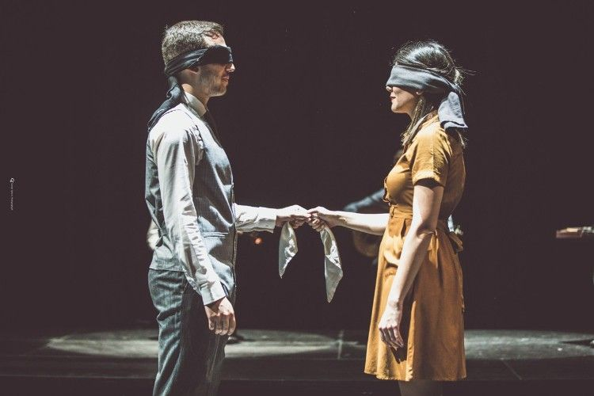
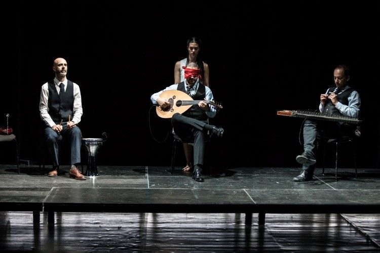
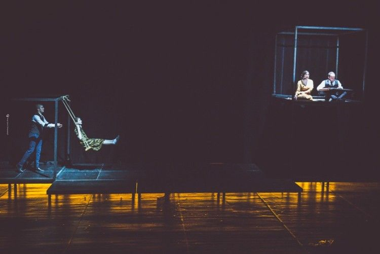
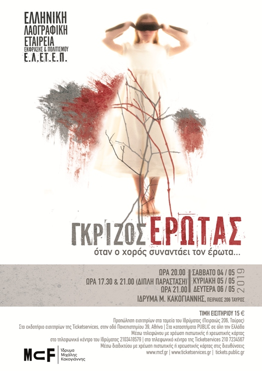

Γκρίζος Έρωτας





Photo Credits: Γιώργος Σπανός
Μουσικός / Performer / Συνθέτρια / Παιδαγωγός
Photo Credits: Γιώργος Σπανός
Ο έρωτας παραδίδεται. Άλλοτε γίνεται σκοτεινός και σε πνίγει. Άλλοτε πάλι σε ακολουθεί με τα ανεκπλήρωτα πάθη του. Σε τυφλώνει... σε τρελαίνει. Και εσύ πάλι εκεί... στο γκρι. Όταν οι εκφάνσεις του λαϊκού πολιτισμού, ο χορός και το τραγούδι, συναντάνε τον έρωτα όλα αλλάζουν. Αληθινές μαρτυρίες, ανομολόγητα πάθη, σκοτεινές αισθήσεις, κρυμμένες θύμισες έρχονται στην επιφάνεια, μετά από δυο χρόνια προετοιμασίας, και τότε βρίσκουμε όλοι τον δικό μας «ΓΚΡΙΖΟ ΕΡΩΤΑ»
Παραγωγή:Ελληνική Λαογραφική Εταιρεία Έκφρασης & Πολιτισμού (Ε.Λ.ΕΤ.Ε.Π.)
Καλλιτεχνική Επιμέλεια: Γιώργος Λιάρος
Συμμετέχουν οι μουσικοί: Θωμάς Κωνσταντίνου (ούτι, λαούτο, τραγούδι ),
Πάνος Δημητρακόπουλος (κανονάκι),
Κώστας Κίκιλης (βιολί),
Παναγιώτης Σκουτέρης (κλαρίνο, γκάιντα, τραγούδι),
Μανούσος Κλαπάκης (κρουστά)
Τραγούδι: Βασούλα Δελλή, Ρούλα Τσέρνου, Θωμάς Γρηγορόπουλος
Έκτακτη Συμμετοχή: Βασίλης Γραμματικός (γκάιντα),
Θάνος Σαμπάνης (τρομπέτα),
Δημήτρης Κατσίβελος (τρομπέτα)
Μουσική Προετοιμασία: Θωμάς Κωνσταντίνου – Πάνος Δημητρακόπουλος
Φωνητική Προετοιμασία: Βασούλα Δελλή
Χορευτική Προετοιμασία: Γιώργος Λιάρος
Επιμέλεια χορογραφίας Σύγχρονου: Φανή Βιτώρη
Τεχνική Υποστήριξη: ProCreation
Υπεύθυνοι Ένδυσης: Άγγελος Θεοδοσίου – Νίκος Σωτηρίου
Επιμέλεια Γραφικών: Έλενα Πετροπούλου
Επιμέλεια trailer: Γιάννης Κορολής
Επιμέλεια-Βιντεοσκόπηση: Παναγιώτης Κυριακόπουλος